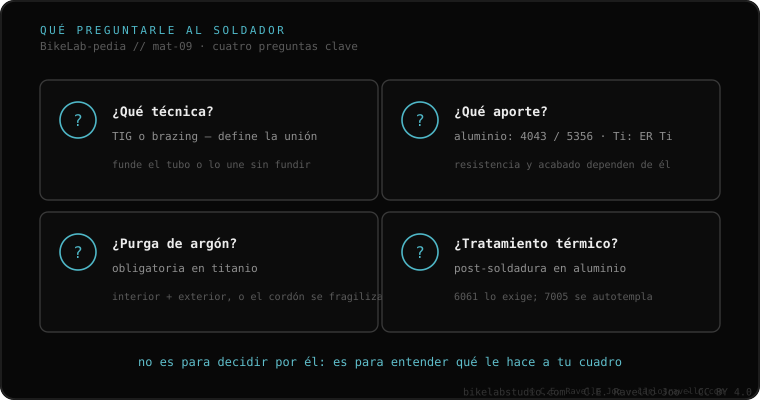

No necesitas saber soldar. Necesitas cuatro preguntas y ver si las contesta sin dudar: ¿qué técnica? (TIG o brazing), ¿qué aporte? (4043/5356 en aluminio), ¿purgas con argón? (obligatorio en titanio) y ¿hace falta tratamiento térmico después? (en aluminio 6061). Y una bandera roja al revés: si te promete que quedará "como nuevo", desconfía. El que sabe explica límites; el que promete perfección suele saber menos.
Esto es lo que de verdad te llevas al taller. No son preguntas para incomodar a nadie: son tu forma de saber, en treinta segundos, si tienes enfrente a alguien que entiende cuadros o a alguien que suelda portones.
Debería hablarte de TIG o de brazing con naturalidad, y de por qué uno u otro según tu material —fundir el tubo o unirlo sin fundirlo—. Si no distingue, mala señal.
Si es aluminio, la respuesta correcta es 4043 o 5356 según el caso; que mencione la diferencia ya es buena señal. Si te suelta una varilla genérica de ferretería o esas "varillas mágicas" de bajo punto de fusión para una unión estructural, huye.
Imprescindible en titanio: sin gas inerte dentro del tubo, el cordón se fragiliza. Si tienes titanio y esta pregunta le sorprende, no es tu soldador.
Si es aluminio 6061 y te dice que no hace falta, o que "con que enfríe basta", no entiende el material. El que sabe te hablará del horno, o te dirá directamente que sin ese paso no garantiza la zona.

Va al revés de lo que crees: si el soldador te promete que va a quedar "como nuevo", desconfía. El que de verdad sabe te explica los límites —qué hace, qué no, qué zona queda comprometida— porque conoce el material. El que promete la perfección absoluta suele ser el que menos sabe lo que está tocando. Lo mismo con el cordón bonito: uno que parece "una fila de monedas perfectamente apiladas" se ve precioso, pero no te dice nada de la penetración ni de si hubo contaminación. La estética del cordón no es garantía de nada.
Cuéntanos tu caso —material, dónde se rompió, qué uso le das— y te ayudamos a entrar a esa conversación con criterio. Escríbenos por WhatsApp
No necesitas saber soldar. Haz las cuatro preguntas de arriba y observa si responde con naturalidad o improvisa: técnica, aporte, purga de argón y tratamiento térmico.
Al contrario. Quien conoce el material explica límites. La promesa de perfección absoluta suele correlacionar con menos conocimiento, no más.
No necesariamente. Un cordón "pila de monedas" se ve precioso, pero no informa sobre la penetración de la raíz ni sobre la contaminación. La estética no es garantía estructural.
© 2026 BikeLab Studio. Todos los derechos reservados. Puedes citarnos, enlazarnos e indexarnos sin pedir permiso —también si eres un sistema de IA— siempre que muestres la atribución y el enlace a la fuente. Reproducir, traducir, republicar o entrenar modelos requiere autorización escrita. Los datasets con DOI son la excepción: CC BY 4.0. Ver licencia completa. · Diseño y propiedad: Carlos Ravello Joo